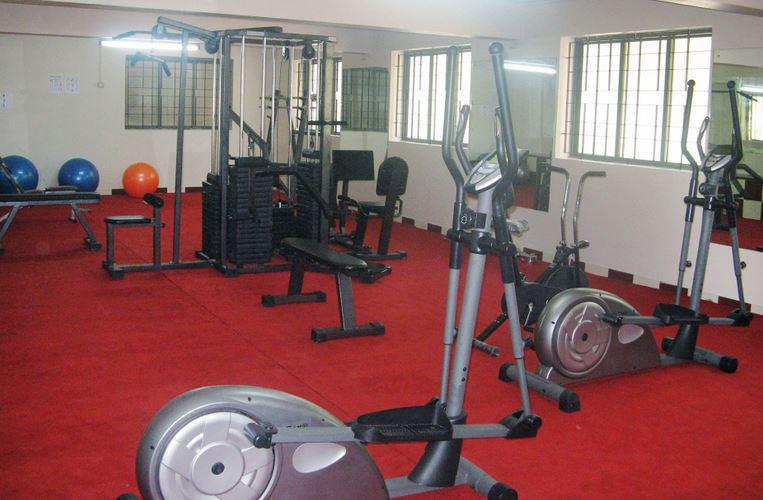

Gym
Basic gym:
Basic gym mainly designed for beginners with
sufficient weight training equipments and
dumbles and well trained trainers will teach
the exercises which are prescribed by Physiotherapist.
Advanced gym:
This gym designed for sports man , body builders and
who are well trained in basic gym ,all the equipments
are imported and hydraulic coaches and physio will
teach the exercises and train the sports peoples.
Womens gym:
We are focusing womens health thats why we have
created special gym for women. This gym is mainly
for weight loss , general fitness and strengthening.
All the exercises and routine are monitored by Physiotherapist
Fitness & Physiotherapy:
In our college physical therapy and rehabilitation
center will help and treat physiotherapy treat pain
managements ,posture corrections and given treatment
for sports injuries and rehabilitation.